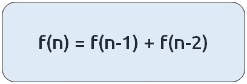

JB TAK FODEGA NHI .... TB TK CHODEGA NHI .... (MAANG)


L1 Phebonachi Number
Dynamic Programming Introduction
Problem Statement: Introduction To Dynamic Programming
In this article, we will be going to understand the concept
of dynamic programming.
Dynamic Programming can be described as storing answers to
various sub-problems to be used later whenever required to
solve the main problem.
The two common dynamic programming approaches are:
Note: The base case does not always mean smaller input. It depends upon the implementation of the algorithm.
The flow of this article will be as follows:

We will be using the example of Fibonacci numbers here. The following series is called the Fibonacci series:
0,1,1,2,3,5,8,13,21,…
We need to find the nth Fibonacci number, where n is based on a 0-based index.
Every ith number of the series is equal to the sum of (i-1)th and (i-2)th number where the first and second number is given as 0 and 1 respectively.
Disclaimer: Don’t jump directly to the solution, try it out yourself first.
Recursive Approch
As every number is equal to the sum of the previous two terms, the recurrence relation can be written as:
The basic pseudo-code for the problem will be given as:

Notes If we draw the recursive tree for n=5, it will be:
If there are two recursive calls inside a function, the program will run the first call, finish its execution and then run the second call. Due to this reason, each and every call in the recursive tree will be executed. This gives the recursive code its exponential time complexity. Can we improve on this? The answer is Yes!

We want to compute f(2) as the second call from f(4), but in the recursive tree we had already computed f(2) once (in the first recursive call of f(3) ) Similar is the case with f(3), therefore if we somehow store these values, the first time we calculated it then we can simply find its value in constant time whenever we need it. This technique is called Memoization. Here the cases marked in yellow are called overlapping sub-problems and we need to solve them only once during the code execution.
.png)
Sb Mai He Kru ...
Khud Bhi Kr le Khuch ..... Nalayk
Time & Space Complexity
Time Complexity: O(N)Reason: The overlapping subproblems will return the answer in constant time O(1). Therefore the total number of new subproblems we solve is ‘n’. Hence total time complexity is O(N).
Space Complexity: O(N)
Reason: We are using a recursion stack space(O(N)) and an array (again O(N)). Therefore total space complexity will be O(N) + O(N) ≈ O(N)
Memoization Approch
Steps to memoize a recursive solution:Any recursive solution to a problem can be memoized using these three steps:
Dry Run:
Declare a dp[] array of size n+1 and initialize it to -1.
Now, following the recursive code we see that at n=5, the value of dp[5] is equal to -1 therefore we need to compute its value and go to the inner recursive calls. Similar is the case at n=4, n=3, and n=2. For n=2, we hit our two base conditions as the inner recursive calls.
As we traverse back after solving n=2, we update its dp array value to 1 ( the answer we got). Similarly, for the second recursive call for n=3, we again hit a base condition and we get an answer of f(n=3) as 2, we again update the dp array.
Then for the second recursive call f(n=4), we see that dp[2] is not equal to -1, which means that we have already solved this subproblem and we simply return the value at dp[2] as our answer. Hence we get the answer of f(n=4) as 3(2+1).
Similarly, for the second recursive call f(n=5), we get dp[3] as 2. Then we compute for(n=5) as 5(2+3).
.png)
Sb Mai He Kru ...
Khud Bhi Kr le Khuch ..... Nalayk
Time & Space Complexity
Time Complexity: O(N)Reason: The overlapping subproblems will return the answer in constant time O(1). Therefore the total number of new subproblems we solve is ‘n’. Hence total time complexity is O(N).
Space Complexity: O(N)
Reason: We are using a recursion stack space(O(N)) and an array (again O(N)). Therefore total space complexity will be O(N) + O(N) ≈ O(N)
Tabulation Approch
Tabulation is a ‘bottom-up’ approach where we start from the base case and reach the final answer that we want.Steps to convert Recursive Solution to Tabulation one.
.png)
Sb Mai He Kru ...
Khud Bhi Kr le Khuch ..... Nalayk
Time & Space Complexity
Time Complexity: O(N)Reason: We are running a simple iterative loop
Space Complexity: O(N)
Reason: We are using an external array of size ‘n+1’.
Space Optimization
If we closely look at the relation,
dp[i] = dp[i-1] + dp[i-2]
we see that for any i, we do need only the last two values in the array. So is there a need to maintain a whole array for it?
The answer is ‘No’. Let us call dp[i-1] as prev and dp[i-2] as prev2. Now understand the following illustration.

.png)

Sb Mai He Kru ...
Khud Bhi Kr le Khuch ..... Nalayk
Time & Space Complexity
Time Complexity: O(N)Reason: We are running a simple iterative loop
Space Complexity: O(1)
Reason: We are not using any extra space Only Used a 2 Variables fro Storing the Prev Result.